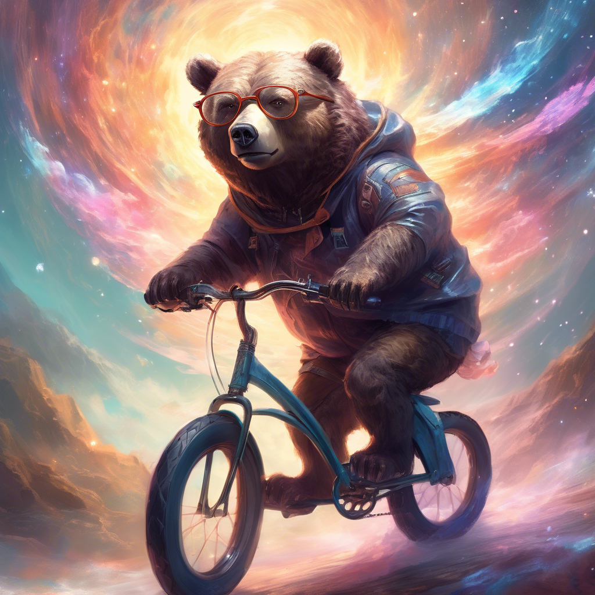
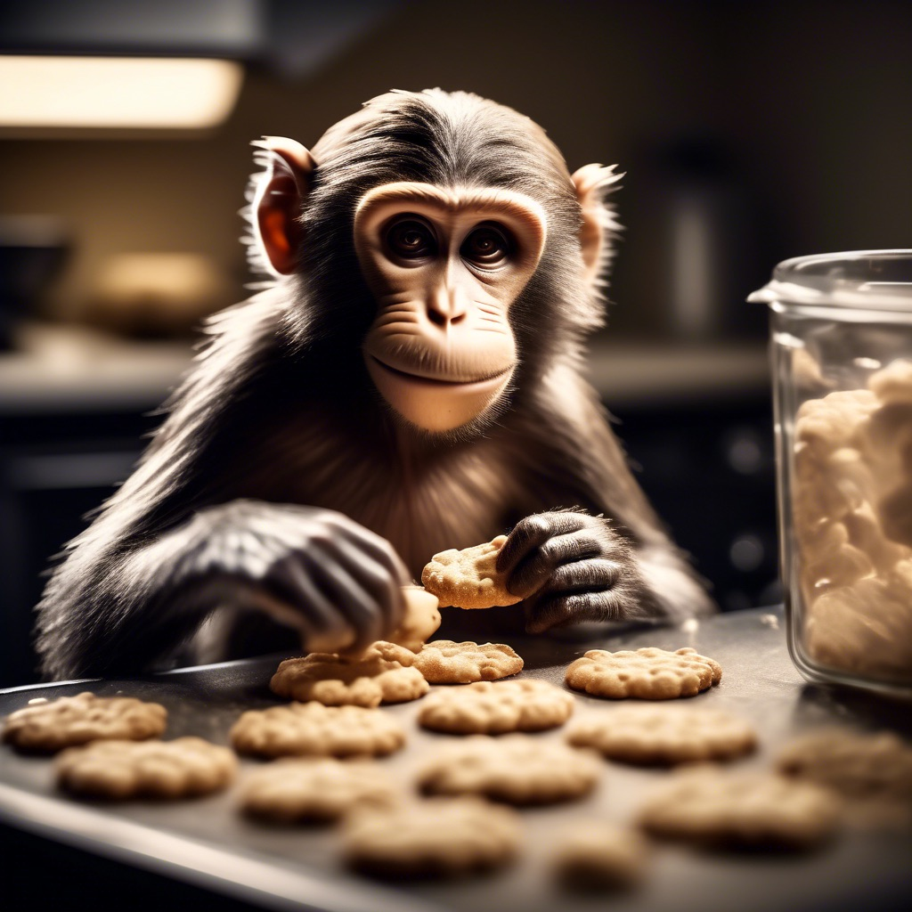

<html></html>
  <title>Zoo Animals</title>
  <header>Come to Lightheart's Cove and rediscover the wonder of zoo animals</header>
  <head>
    <nav>Home</nav>
  </head>
  <body>
      <H1>The Amazing Animals of Lightheart's Cove!</H1>
      <h2><u>Bears</u> </h2>
        <h3>Our lively duo of bears</h3>
          <ol> 
            <li>Ollie</li> 
            <p>Ollie is a fun loving and highly intelligent bear. He is quite capable on a bicycle as well as a brilliant orator of prose and lyrics. Ollie was adopted after incurring injuries while rescuing a litter of Labrador retriever puppies from a burning building.</p>
             
            <li>Mona</li> 
              <p>Mona is a gentle and kind beast who spends most of her time floating in Lightheart’s Cove’s Lazy river, but don’t worry folks it doesn’t go through the other animals enclosures. She has been a proud resident of the cove for more than 9 years.</p>
              
          </ol>
            <h3>Fun facts and resouces about bears</h3>
              <h4>Facts</h4>
                <ul>
                  <li>Bears are omnicours</li>
                  <li>They can smell from more than 5 miles away</li>
                  <li>Bears can climb faster then they can run</li>
                  <li>Wild brown bears use rocks as a tool to scratch an itchy spot</li>
                  <li>Brown bears know they are being hunted.</li>
                </ul>
              <h4>Resource links</h4>  
                <ul>
                  <li> <a href="https://www.youtube.com/watch?v=WaaANll8h18">Which bear is best?</a> </li>
                  <li><a href="https://www.nps.gov/subjects/bears/safety.htm">Bear safety by the NPS(National Park Service)</a></li>
                  <li><a href="https://www.amazon.com/bear-spray/s?k=bear+spray">Purchase bear spray</a></li>
                </ul>
              <h3><a href="https://en.wikipedia.org/wiki/Bear">Bear wikipedia entry</a></h3>
          <h2><u>Giraffes</u></h2>
            <ol> 
              <li>Frankie</li> 
                <p>Frankie is proudly celebrating his 5th birthday this November 4th, please come visit to watch as he blows out his candles</p>
                
              <li>Coconut</li> 
                <p>Cookie loves to go down to Lightheart’s Cove’s ice rink. She might not be the most graceful at walking, but get her on the ice and her elegance is unrivaled.</p>
                 
            </ol>
              <h3>Giraffe Facts</h3>
                <ul>
                  <li>Their Spots Are Like Fingerprints</li>
                  <li>Not One, But Four Species.</li>
                  <li>Giraffes Are Silent Giants.</li>
                  <li>They Have a Height Advantage.</li>
                  <li>They have strong hearts.</li>
                  <li>Giraffes Sleep Standing Up.</li>
                  <li>They walk funny</li>
                </ul>
              <h3><a href="https://en.wikipedia.org/wiki/Giraffe">Giraffe wikipedia entry</a></h3>
      <h2><u>Lions</u></h2>
        <ol> 
          <li>Mella</li>
            <p>Mella is a formidable and measured creature, hunting by night and sleeping by day. She doesn’t take much time to socialize but she does enjoy her time by the watering hole. </p>
            
          <li>Karl</li> 
            <p>Karl is the more social of our two lions. He enjoys riding his convertible around Lightheart’s Cove/ When he isn’t tearing up the streets he prefers games such as canasta and sequence. </p>
            
            
        </ol>
        <h3>Lion Facts</h3>
          <ul>
            <li>Nearly all wild lions live in Africa, but one small population exists elsewhere.</li>
            <li>They start off spotty.</li>
            <li>The magnificent manes on male lions tell a story.</li>
            <li>Lion cubs are reared together.</li>
            <li>Lions can get their water from plants</li>
            <li>They hunt during storms.</li>
          </ul>
        <h3><a href="https://en.wikipedia.org/wiki/Lion">Lion wikipedia entry</a></h3>
      <h2><u>Monkeys</u></h2>
        <ol> 
          <li>Cookie</li> 
            <p>Since being adopted Cookie has taken up baking as a hobby to the delight of the stand and the animals at the cove. She routinely gets up at the crack of dawn to bake fresh scones for all.</p>
            
          <li>Earl</li>
            <p>Earl lives in a hermitage as much as possible. He has built a small wooden cabin on the south end of the cove. The cabin is a roomy 1600 sqft complete with on suite jetted tub.</p>
            
          <li>Banana Puffing</li> 
            <p>Banana Pudding or “Beep” as we have come to call him has started an organized crime ring involving the wild animals that frequent the cove including squirrels, crows, and muskrats.the animal handlers are nervous that his lust for power and control will someday be the downfall of all of us.</p>
            
        </ol>
        <h3>Monkey Facts</h3>
          <ul>
            <li>Just like young children, monkeys have a high IQ</li>
            <li>Illnesses can be spread to people by monkeys.</li>
            <li>The owl monkey's more enduring moniker is the "night monkey."</li>
            <li>Monkeys and apes are not the same but are related.</li>
            <li>To interact with one another, monkeys engage in grooming rituals.</li>
          </ul>
        <h3><a href="https://en.wikipedia.org/wiki/Monkey">Monkey wikipedia entry</a></h3>
      <h2><u>Aligators</u></h2>
        <ol> 
          <li>Wren</li> 
            <p>Often the night owl Wren enjoys no limit Texas hold-em. While owning a significant amount of bananas to Beep, he stays in the favor of the monkey lord by serving as an enforcer in the waters of the cove.</p>
            
          <li>Aspen</li>
            <p>Aspen has recently become a vegan, We don’t know how long it will last. He tends to get very interested in fad and restriction diets often. We suspect he is just bored with a zoo life style that provides little to no challenges.</p>
            
          <li>Mika</li> 
            <p>Mika loves getting out on the water, byt she can't swim. We provided her with a boat and she has been rowing her way to joy everyday!</p>
            
        </ol>
        <h3>Alligator Facts</h3>
          <ul>
            <li>Alligators Are Ancient.</li>
            <li>They Can't Survive in Salt Water.</li>
            <li>They Can Weigh More Than 1,000 Pounds.</li>
            <li>Their Sex Is Determined by Temperature</li>
            <li>They Can Run Fast but Tire Quickly.</li>
            <li>Their Eyes Glow in the Dark.</li>
          </ul>
        <h3> <a href="https://en.wikipedia.org/wiki/Alligator">Alligator wikipedia entry</a>
        </h3>

      <footer>
        <p>Contact Us</p>
        <p>History</p>
        <p>Meat Sales</p>
      </footer>
  
  
  
  
    </body>
</html>